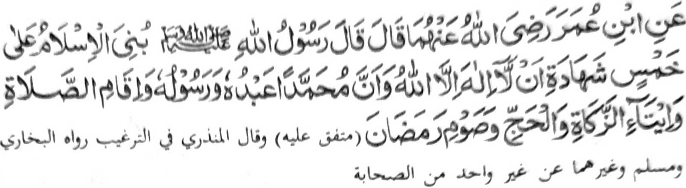
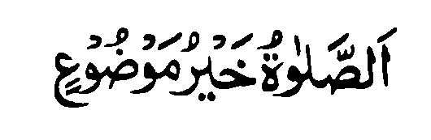

Dowa a pinto-an a madadalem si-i. So paganay ron na so “Gona o Sambayang”, go aya ika-dowa na so “Tapa-os ago Pangangalek” a bagi-an o manga tao a miyagak sa Sambayang.

Miyaka thitayan ko Ibn Omar (Radhiallaho ‘Anho) a pitharo o Rasulollah (Sallallaho ‘Alaihi wa Sallam), “Piyanagombalay so Islam ko lima:
- So kazaksi-i sa daden a tohan inonta bo so Allah go mata-an a so Muhammad (Sallallaho ‘Alaihi wa Sallam) na oripen Iyan go sogo Iyan,
- go so kipamayandegen ko Sambayang,
- go so kibegan ko Zakat,
- go so Hajj,
- go so kaphowasa ko Ramadhan.”
So Rasulollah (Sallallaho ‘Alaihi wa Sallam) na ini ibarat iyan so Islam sa bala-balay a matotokod a lima pola-os. So Kalimah i pola-os sa lo-ok, na so ped a pola-os na si-i ko manga rogo niyan a pat. O mada so pola-os sa lo-ok na di phakatindeg, na o mada so isa ko pat a pola-os ko apiya anda rogo na khigobar sangkoto a rogo.
Imanto na kokomen tano so manga ginawa tano o anda taman i kapaka-titindega tano sangka iya bala-balay o Islam. Ino ba aden a isa bo a pola-os a maka thitikena ko darpa iyan?
Giyangkanan a lima pola-os a miya aloy sangka iya Hadith na mitotoro iyan so piphaporoan a paliyogat ko Muslim. Benar ka di mipen-darainon o Muslim so isa kiran bo ogaid na so Sambayang ko Islam na aya darepa iyan na tomotondog ko Iman.
So Abdullah Ibn Mas’ud (Radhiallaho ‘Anho) na pitharo iyan: “Miyaka isa na iniza-an aken so Rasulollah (Sallallaho ‘Alaihi wa Sallam) o antona-ay amaal (o tao) a pekhababaya-an o Allah.
So Mulla Ali Qari (Rahmatollahi ‘Alaihi) na miya aloy niyan angka iya Hadith a inibabid iyan ko paratiyaya sa so Sambayang i piphaporo-an a paliyogat o Agama ko oriyan o Iman. Miya bager pena-i o isa a Hadith, a miya-aloy ron a miyatharo o Rasulollah (Sallallaho ‘Alaihi wa Sallam),

“So Sambayang i aya makalelebi ko manga paliyogat o Allah.”